Time to look beneath the hood. While the standard template library is a great tool, it's important to understand how dynamic data structures like lists and trees are actually implemented. We'll start with two simple data structures -- Stacks and Queues -- and how we implement them without any help from the standard template library. We then demonstrate how to implement doubly linked lists, which is how the STL list data structure is implemented.
One of the nice parts of the standard template library is that it works with all data types. We're going to pare it down, and have our data structures only hold strings.
Stacks
A stack is a "LIFO" -- "Last in, first out" data structure. It supports two main operations:
- void Push(string s): The adds a string to the stack.
- string Pop(): This returns the most recently added string.
The full stack API is in stack.h, which contains class definitions:
#include <string>
class Stacknode {
public:
string s;
Stacknode *next;
};
class Stack {
public:
Stack();
~Stack();
int Empty();
void Push(string s);
string Pop();
protected:
Stacknode *top;
};
|
Ignore the "Stacknode" stuff for now. Just concentrate on the public methods for the stack. Besides the Push() and Pop() methods, there is an Empty() method, plus a constructor and a destructor.
A simple application that uses a stack is a program that reverses standard input -- you read each line and push it onto a stack, and then pop each string from the stack, printing as you go. The code is in stackrev.cpp:
#include "stack.h"
#include <iostream>
using namespace std;
main()
{
string s;
Stack st;
while (getline(cin, s)) st.Push(s);
while (!st.Empty()) cout << st.Pop() << endl;
}
|
It's nice when a data structure so naturally fits an application. That's some clean code.
Implementation
Now let's look at the implementation. Each value that gets stored on the stack is going to be stored in a single instance of the Stacknode class. The top of the stack will be a pointer to last Stacknode that was pushed, and then each Stacknode will point the previously pushed node with its next pointer. The very first Stacknode will have next equal NULL.For example, suppose we do:
Stack st;
st.Push("Give");
st.Push("Him");
st.Push("Six");
|
Our stack is going to look as follows:
 |
The reason that we have this structure is that it facilitates adding new Stacknode's via Push(), and removing them via Pop(). Let's consider Push(). Here's the code (in stack.cpp):
void Stack::Push(string s)
{
Stacknode *newnode;
newnode = new Stacknode;
newnode->s = s;
newnode->next = top;
top = newnode;
}
|
What this does is create a new node with the given string, and hook that node on to the top of the stack. Consider calling Push("Now") on the stack above. We'll go through each step:
| 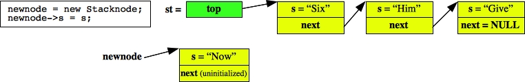 |
| 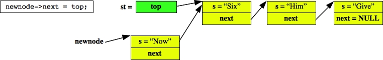 |
| 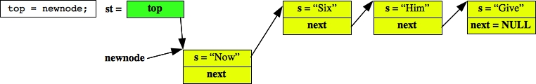 |
When Push() returns, the variable newnode goes away, and we are left with a stack that has "Now" on top:
| 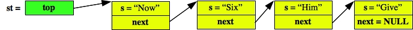 |
Pop() on the other hand, needs to store the string that is on the first node, remove that node from the stack, and return the stored string. Since Push() called new, Pop() must call delete. Otherwise, our stack implementation will have a memory leak.
Here's the code:
string Stack::Pop()
{
string rv;
Stacknode *oldtop;
if (top == NULL) {
cerr << "Error: pop() called on an empty stack\n";
exit(1);
}
oldtop = top;
top = oldtop->next;
rv = oldtop->s;
delete oldtop;
return rv;
}
|
And below we step through Pop() called on the original three-node stack:
| 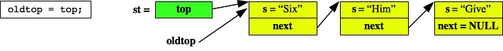 |
| 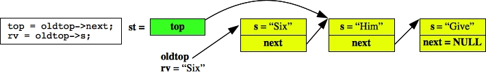 |
| 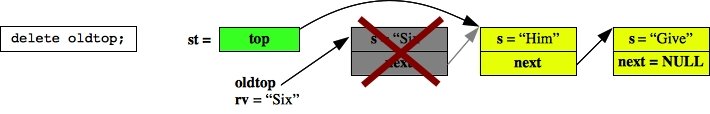 |
When we're done, we return "Six" to the caller, and our stack only has two elements:
| 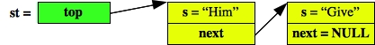 |
Be sure you understand how these two methods work. Understanding linked data structures is a fundamental concept, and this is the easiest example. You need to understand it before you can move on.
With the exception of the destructor, the remaining two methods are straightforward:
Stack::Stack()
{
top = NULL;
}
|
int Stack::Empty()
{
return (top == NULL);
}
|
The destructor is a little subtle. It is called whenever a Stack is deallocated. This can happen if you allocate a Stack with new and then call delete. It also happens when you return from a procedure in which you declared a Stack as a variable. Destructors are necessary because you called new during your Push() calls. If the Stack goes away and no destructor were called, then the nodes on the stack would constitute a memory leak. You need to define a destructor which deletes all the nodes on the stack:
Stack::~Stack()
{
Stacknode *next;
while (top != NULL) {
next = top->next;
delete top;
top = next;
}
}
|
I could have made this code simpler:
Stack::~Stack()
{
while (!Empty()) Pop();
}
|
However, my code is more efficient, because it is not making a bunch of method calls, and it is not performing the error checking that Pop() performs.
Go ahead and double-check that stackrev works:
UNIX> make stackrev g++ -c stackrev.cpp g++ -c stack.cpp g++ -o stackrev stackrev.o stack.o UNIX> head -n 5 input.txt John Eighth Tristan Passenger Joshua Classroom Oliver Andrew Propagandist Tristan Tristan Hieratic UNIX> head -n 5 input.txt | stackrev Tristan Tristan Hieratic Oliver Andrew Propagandist Joshua Classroom Tristan Passenger John Eighth UNIX>
Queues
If any of that Stack description was unclear to you, go over it again. If it's still unclear, ask me about it in class, or ask your TA about it during their office hours. I know I'm repeating myself -- this is fundamental material, and you need to understand it before proceeding.A queue is a FIFO data structure: first-in, first-out. It can be used to mimic lines at the grocery store, or cars waiting at a traffic light. The Queue API (in queue.h) is pretty much identical to the Stack API. It works differently, though, because Pop() now removes the oldest element of the queue, rather than the newest.
#include <string>
using namespace std;
class Qnode {
public:
string s;
Qnode *ptr;
};
class Queue {
public:
Queue();
~Queue();
int Empty();
int Size();
void Push(string s);
string Pop();
protected:
Qnode *first;
Qnode *last;
int size;
};
|
The protected data is different, too. Now you are going to keep a pointer to the first and last nodes on the queue. If the queue is empty, then both will be NULL.
Each Qnode has ptr, which points to the previous node on the queue. The anology here is that if you are in line, you point to the person behind you, not the person in front of you. The reason is that this way you can insert new nodes behind the last one, and you can delete the first node.
Let's take an example like the stack example:
Queue q;
q.Push("Give");
q.Push("Him");
q.Push("Six");
|
This is going to result in the following layout of data:
| 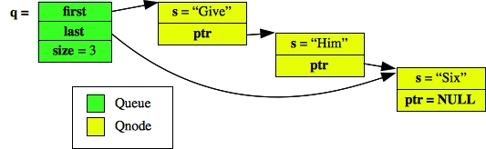 |
Let's first consider calling Pop(). The code is nearly exactly like the stack code, only we are removing the first node rather than the top node, and we have to put some extra code in to handle popping the last node on a queue. The code is in queue.cpp:
string Queue::Pop()
{
Qnode *oldfirst;
string rv;
if (size == 0) {
cerr << "Error: pop() called on an empty queue\n";
exit(1);
}
rv = first->s;
oldfirst = first;
first = oldfirst->ptr;
delete oldfirst;
if (first == NULL) last = NULL;
size--;
return rv;
}
|
As with the stack code, we'll go over an example step by step:
| 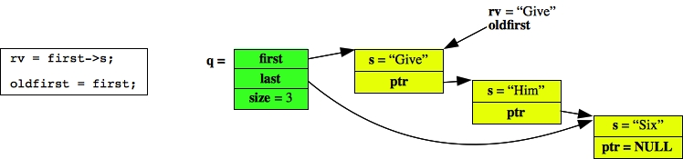 |
| 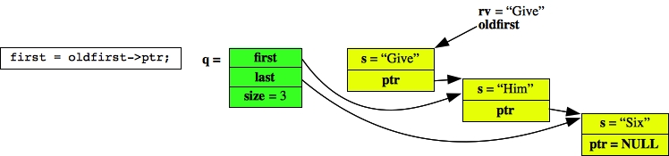 |
| 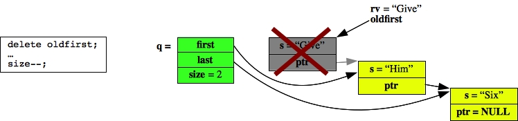 |
Pop() then returns "Give", its local variables go away, and then resulting Queue is:
| 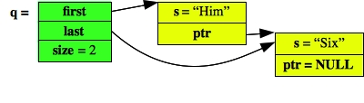 |
The code for Push() is quite different from the stack code. As before, we create a new node with new and set its string. However, we differ by setting the new node's ptr to NULL. Then we have to do two different things depending on whether the queue was previously empty. If it was empty, then we set first and last to the new node. Otherwise, we set the last element's ptr to the new node, and then set last to be the new node. In that way, the new node goes after the last element. Here is the code:
void Queue::Push(string s)
{
Qnode *newnode;
newnode = new Qnode;
newnode->s = s;
newnode->ptr = NULL;
if (last == NULL) {
first = newnode;
} else {
last->ptr = newnode;
}
last = newnode;
size++;
}
|
Below is an example of calling Push("Now") on the two element list above:
| 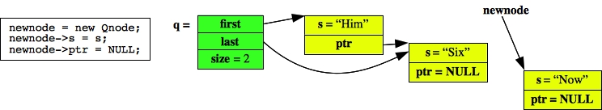 |
| 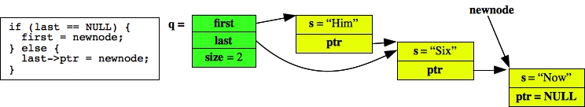 |
| 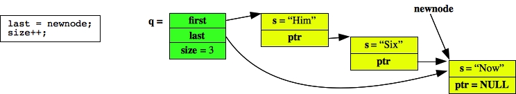 |
When it returns, newnode goes away, and the resulting queue is:
| 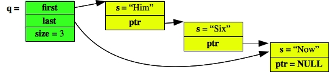 |
The rest of the code is straightforward -- you can just click on queue.cpp to see it all. Make special note of the destructor, which is very much like the stack code.
For our example, we implement tail with a queue in queuetail.cpp:
#include "queue.h"
#include <iostream>
using namespace std;
main()
{
string s;
Queue q;
while (getline(cin, s)) {
q.Push(s);
if (q.Size() > 10) q.Pop();
}
while (!q.Empty()) cout << q.Pop() << endl;
}
|
Verify to yourself that it works:
UNIX> make queuetail
g++ -c queuetail.cpp
g++ -c queue.cpp
g++ -o queuetail queuetail.o queue.o
UNIX> cat -n input.txt
1 John Eighth
2 Tristan Passenger
3 Joshua Classroom
4 Oliver Andrew Propagandist
5 Tristan Tristan Hieratic
6 Isabelle Bailey Prey
7 Ellie Alkaloid
8 Elijah Epithelium
9 Daniel Topgallant
10 Kate Surcease
11 Brayden Clarinet
12 Nicholas Casteth
13 Hunter Hart
14 Ellie Bangle
15 Addison Fracture
16 Ava Hereafter
17 Evelyn Kigali
18 Tristan Housewives
19 Jack Bodybuilder
20 Gabriel Millionth
UNIX> cat -n input.txt | queuetail
11 Brayden Clarinet
12 Nicholas Casteth
13 Hunter Hart
14 Ellie Bangle
15 Addison Fracture
16 Ava Hereafter
17 Evelyn Kigali
18 Tristan Housewives
19 Jack Bodybuilder
20 Gabriel Millionth
UNIX>
Doubly-Linked Lists
The most general-purpose list data structure is the doubly linked list. It is how the list part of the STL is implemented. The nice features of doubly-linked lists are that they may be traversed in the forward and reverse direction, they allow for arbitrary insertion of nodes anywhere in the list, and they allow for arbitrary deletion of any nodes. Our API for the doubly linked list is in dlist.h:
#include <string>
using namespace std;
class Dnode {
public:
string s;
Dnode *flink;
Dnode *blink;
};
class Dlist {
public:
Dlist();
~Dlist();
int Empty();
int Size();
void Push_Front(string s);
void Push_Back(string s);
string Pop_Front();
string Pop_Back();
Dnode *Begin();
Dnode *End();
Dnode *Rbegin();
Dnode *Rend();
void Insert_Before(string s, Dnode *n);
void Insert_After(string s, Dnode *n);
void Erase(Dnode *n);
protected:
Dnode *sentinel;
int size;
};
|
All of these methods should be familiar to you, as they are analogous to STL methods. There are two simple implementations of reversing standard input in dlistrev-1.cpp and dlistrev-2.cpp. The first works by calling Push_Back() and Pop_Back(), and the second works by calling Push_Front() and Pop_Front().
A little more subtle is dlistrev-3.cpp, which creates the list using Push_Front(), and then traverses it using Begin() and End():
#include "dlist.h"
#include <iostream>
using namespace std;
main()
{
string s;
Dlist l;
Dnode *d;
while (getline(cin, s)) l.Push_Front(s);
for (d = l.Begin(); d != l.End(); d = d->flink) cout << d->s << endl;
}
|
That for loop looks very STL-like, except Begin() and End() don't return iterators. They return a pointer to the list node, which contains three fields:
- The string s.
- A pointer to the next node on the list: flink (forward link).
- A pointer to the previous node on the list: blink (backward link).
In a similar manner, in dlistrev-4.cpp, the list is created with Push_Back(), and we traverse it from back to front using Rbegin(), Rend() and d->blink:
#include "dlist.h"
#include <iostream>
using namespace std;
main()
{
string s;
Dlist l;
Dnode *d;
while (getline(cin, s)) l.Push_Back(s);
for (d = l.Rbegin(); d != l.Rend(); d = d->blink) cout << d->s << endl;
}
|
Alternatively, in dlistrev-5.cpp, we create the list with Push_Front() and print it by repeatedly printing the first element and then erasing it:
#include "dlist.h"
#include <iostream>
using namespace std;
main()
{
string s;
Dlist l;
while (getline(cin, s)) l.Push_Front(s);
while (!l.Empty()) {
cout << l.Begin()->s << endl;
l.Erase(l.Begin());
}
}
|
And finally, in dlistrev-6.cpp, we use the Insert_Before() method, which inserts a new node before the given node, to create the list in a manner equivalent to Push_Back(). We do this by inserting before End(). We then traverse the list from back to front.
#include "dlist.h"
#include <iostream>
using namespace std;
main()
{
string s;
Dlist l;
Dnode *d;
while (getline(cin, s)) l.Insert_Before(s, l.End());
for (d = l.Rbegin(); d != l.Rend(); d = d->blink) {
cout << d->s << endl;
}
}
|
Circular Lists with a Sentinel
I'm not going to implement dlist.cpp for you. That's your job in lab. However, I will outline the structure, which may seem convoluted at first, but will seem elegant and beautiful by the time you're done with it.We are going to have our lists contain a sentinel node. This is an extra node which begins each list. So, if a list contains size elements, then it will contain size+1 nodes.
Secondly, our list is going to be circular. This means that the flink field of the last node in the list points to the sentinel, and the blink field of the first node also points to the sentinel. This may seem confusing, so let's look at an example. Suppose we do:
Dlist l;
l.Push_Back("Give");
l.Push_Back("Him");
l.Push_Back("Six");
|
Then our list looks as follows:
| 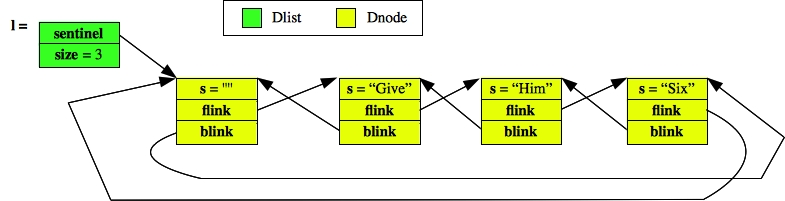 |
Think about traversing such a list. Typically, a student's first response to this structure is, "How do I keep from getting into an infinite loop when I'm traversing?" The answer is that you end when you reach the sentinel node. Consider the loop from dlistrev-3.cpp:
for (d = l.Begin(); d != l.End(); d = d->flink) cout << d->s << endl; |
l.Begin() is going to return sentinel->flink, and l.End() is going to return sentinel. Thus, executing this loop on the list above will indeed print out "Give", then "Him", and then "Six". At the next iteration of the loop, the pointer d will be pointing to the sentinel, and the loop will end.
Study that code and the picture above until you understand it.
When the constructor for a list is called, it is going to allocate a sentinel node and have its flink and blink pointers point to itself:
| 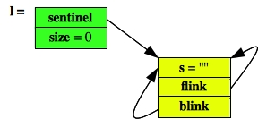 |
That means you are going to have to call new in the constructor. Consider the previous for loop executing on the empty list. Since sentinel->flink is equal to sentinel, the body of the loop is never executed. That's just what you want!
Insertion
Suppose I want to insert a new node before a given node in the list. For example:
Dlist l;
Dnode *d;
l.Push_Back("Come");
l.Push_Back("Eileen");
d = l.Begin();
d = d->flink;
l.Insert_Before("On", d);
|
At the point of the Insert_Before() statement, here's the state of the program:
| 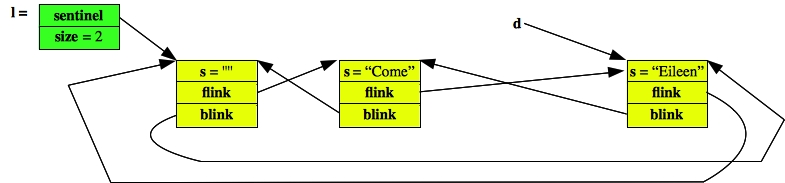 |
In Insert_Before(), we'll have two (Dnode *)'s called prev and newnode. We'll set prev to d->blink and set newnode equal to a newly allocated Dnode with the proper string:
 |
Now we can hook newnode into the list by appropriately setting its flink and blink pointers, and by appropriately setting prev->flink and d->blink. When we're done, the new node is hooked into the list:
| 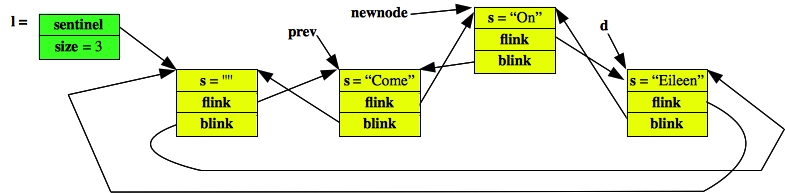 |
Insert_Before() returns to the caller, which means that newnode and prev go away, and the list is as we want it:
| 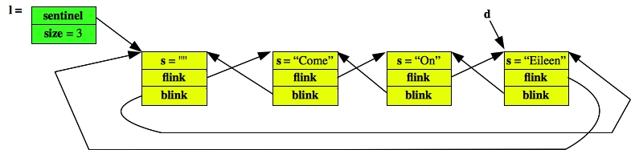 |
Since the list is circular, you can insert new nodes between the sentinel and the last node on the list. What will that do? That will effect Push_Back()! In fact, you can implement each of Push_Back(), Push_Front(), and Insert_After with Insert_Before(). Isn't that convenient.
Deletion
First, you should never allow deletion of the sentinel. If you do, you'll be in a world of hurt... Deleting other nodes is a straightforward affair, much like insertion. Consider the following code:
Dlist l;
Dnode *d;
l.Push_Back("Come");
l.Push_Back("On");
l.Push_Back("Eileen");
d = l.Begin();
d = d->flink;
l.Erase(d);
|
At the point of the Erase() call, the state of the program is:
| 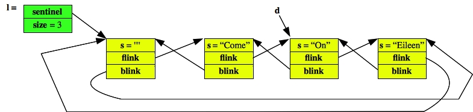 |
As before, in Erase(), we'll have two (Dnode *)'s, this time called prev and next. We set them to the two nodes surrounding d:
| 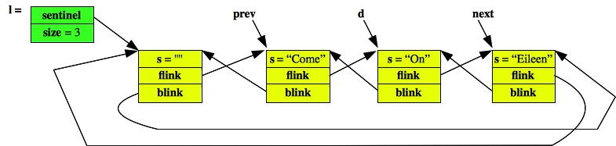 |
We can then remove d from the list by setting next's blink pointer and prev's flink pointer:
| 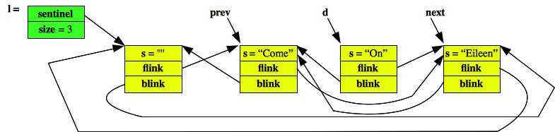 |
And calling delete on d (and decrementing size):
| 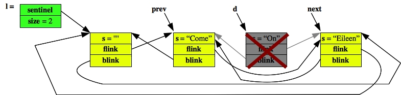 |
When Erase() returns, the node is gone, as are prev and next. The variable d is now pointing to deleted memory, you should should take care not to use it.
| 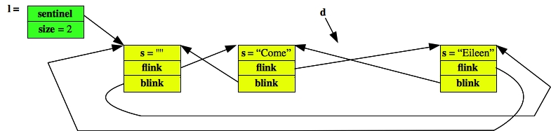 |
As with Insert_Before(), you can use Erase() to implement other methods like Pop_Back() and Pop_Front().